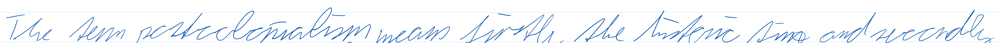

Anhang A — Ein OCR Modell auf meine Schrift trainieren
A.1 Versuche
A.1.1 ein rein Englisches Modell
Modell und training data verfügbar
Für das Englische Modell habe ich bisher eine meiner Einglisch Klausuren in etwa 220 Teile unterteilt, welche vorerst verwendet werden um das Modell zu trainieren.
Um es zu testen, kann tesseract /mnt/d/Programming/tesstrain/data/eng_Erik-ground-truth/eva1_slice1.tif stdout --tessdata-dir /mnt/d/Programming/tesstrain/data -l eng_Erik --psm 7 ausgeführt werden.
Um zu trainieren in /mnt/d/Programming/tesstrain sein und make training MODEL_NAME=eng_Erik MAX_ITERATIONS=300000 ausführen
A.1.1.1 Timeline (in 10.000er Schritten)

Satz: The term postcolonialism means firstly the historic time and secondly
- whes term posterlanialine man foriotly the intinnc bimm oad ay eeentle
- Whwu tars postaolonallinm means fiestly the histinc thme and secorphld
- Tiy tears posifaolioicalimm meams fiexstl the titisic tme and segorall
- Thr term postficaolonialism meams fisitly the histac time and secoroll.
- Tie term postoolonialism yeans fixistly the istiic time and sucarile,
- TBVhe term postoclnalisms means fisstly the histisic thrme and segorsle
- The ters postcoloniabiss wmeass frstty the hetoric tirse and secenedh
- The temm posicolonialiasm means fistlty the tistomic tirme and seconsle
- The tem postoeclonialiasm means fiat the iistoric time and seconoll
- The term postcolonialism means frsstl the histosic time and sucoreole
- The tems postoclonialism means fixstly the histosic thime and secorole
- Bhe tm postaclonialisms means fisstt the tistom time and sweormls,
- The therm postaclonialisrm means firty the thistoric thrme and secrowolld
- The term postcolonialisms means fiisty ithe historic thame and secenol
- Tdhe nsm postcolonialisms means firsttky the histric ptire and secoenoll
- Te temm postcolonialism means firstly the tistosc time and secoreldl
- The tamm postaclonialisms means firtty the histosic tim and secoroll
- The tem postcclonialisms yeans firstty the historic thre and seconrold
- The term pGostooclonialisms means fis iy the ristoric tire and ecrald
- The term postoclonialism meass firsly the historic the and seceraled
- The tesm postoclonialismm means firrtly the tistoric thime and seconcle
- The temm postaclonialism means fisrttly the tistoric time and seconcle
- TVhe term postcolonialisms means fxtly the historic time and secorcole
- The term postcolonialims means frmesly the historic time and secorole
- The ters postcolonialims means fisssly the tistoric time and seconole
- Thie term postcolonialisss means ficstly the historic time and secanole
- The term postcolomnialims vyeans firisttly the tistoric tirme and seconol
- he ters postcclonialisss meams fisstly the tistoric time and seconcle
- Tie term postoclonialisms means fiissly the historic time and secondl
- The trrm postcoclonialisss means firstly the tietoric time and secondl
Und hier das normale Tesseract eng Ergebniss: Che Jom pethecheiwbly) on Aas, poe Nefevi. Jin, cath vec.
Wie in den Ergebnissen zu sehen ist, ist die Datenbasis vermutlich zu klein und das Modell daher zu spezifisch.
A.1.2 Ein multilinguelles Basismodell mit späteren finetuning
A.2 Nützliche Python scripts
A.2.1 Ein Datei Umbenenner
import os
import sys
if __name__ == '__main__':
if len(sys.argv) not in [4, 3]:
print('Usage: python file-renamer.py <search_string> <replace_string> [<directory>]')
sys.exit(1)
search_string = sys.argv[1]
replace_string = sys.argv[2]
directory = sys.argv[3] if len(sys.argv) == 4 else os.getcwd()
count = 0
for filename in os.listdir(directory):
file_path = os.path.join(directory, filename)
if os.path.isfile(file_path):
new_filename = filename.replace(search_string, replace_string)
new_file_path = os.path.join(directory, new_filename)
if filename != new_filename:
os.rename(file_path, new_file_path)
count += 1
print('Renamed {} files.'.format(count))A.2.2 Dateien ohne File-Extension mit .gt.txt versehen
import os
import sys
def rename_files_in_directory(directory):
"""
Renames files in a given directory by appending '.gt.txt' to their names.
Args:
directory (str): The path to the directory containing the files.
Returns:
None
"""
current_directory = directory
file_list = os.listdir(current_directory)
for file_name in file_list:
if not 'gt' in file_name and (file_name.endswith('.txt') or '.' not in file_name):
if '.' not in file_name:
new_name = file_name + '.gt.txt'
else:
new_name = file_name.replace('.txt', '.gt.txt')
os.rename(os.path.join(current_directory, file_name),
os.path.join(current_directory, new_name))
if __name__ == "__main__":
if len(sys.argv) > 1:
directory = sys.argv[1]
rename_files_in_directory(directory)
else:
rename_files_in_directory(os.getcwd())A.2.3 File Präfixer
import os
import sys
def add_prefix(directory, prefix, recursive=False):
file_count = 0
for filename in os.listdir(directory):
file_path = os.path.join(directory, filename)
if os.path.isfile(file_path):
new_filename = prefix + filename
os.rename(file_path, os.path.join(directory, new_filename))
file_count += 1
if recursive and os.path.isdir(file_path):
count = add_prefix(file_path, prefix, recursive)
file_count += count
return file_count
if __name__ == "__main__":
directory = input("Enter the directory path: ")
prefix = input("Enter the prefix: ")
recursive = input("Do you want to make it recursive (y/n)? ").lower() == 'y'
file_count = add_prefix(directory, prefix, recursive)
print(f"{file_count} files renamed.")